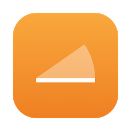
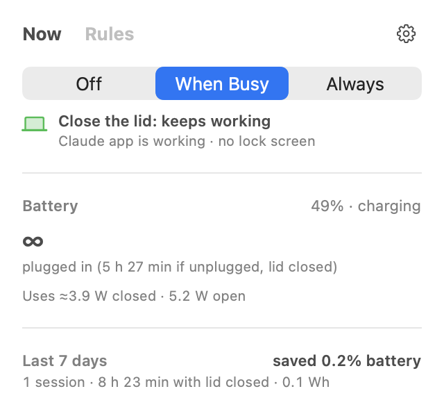
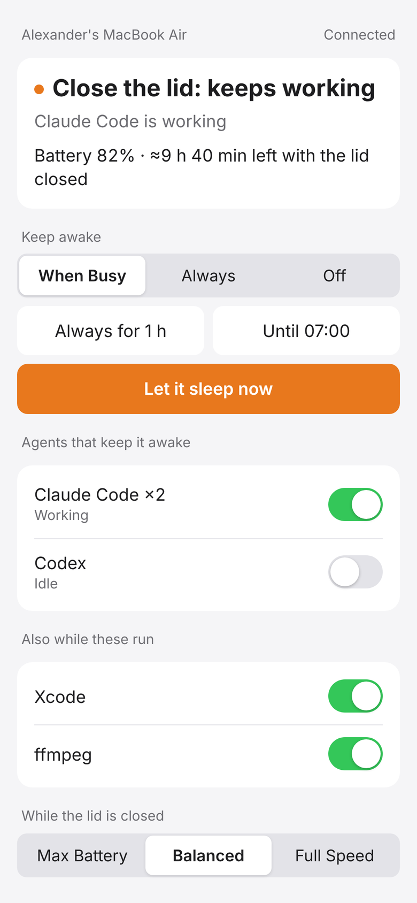

Ajar keeps your laptop awake with the lid shut while Claude Code, Codex and other agents run, then lets it sleep when they're done.
Download for MacFirst open: macOS asks before running apps from outside the App Store. Go to System Settings › Privacy & Security and click Open Anyway.

Awake while an agent is working, or while apps you pick are running, like an Xcode build. Sleeps a few minutes after.
Low power and slowed apps while the lid is shut. Everything goes back when you open it.
Sleeps at your battery limit whatever else is going on, and on Mac and Linux if it gets too hot.

See if it's still working, switch modes, or let it sleep, from anywhere. End-to-end encrypted.
It then opens from your Home Screen like an app. Already paired? Open the phone page.